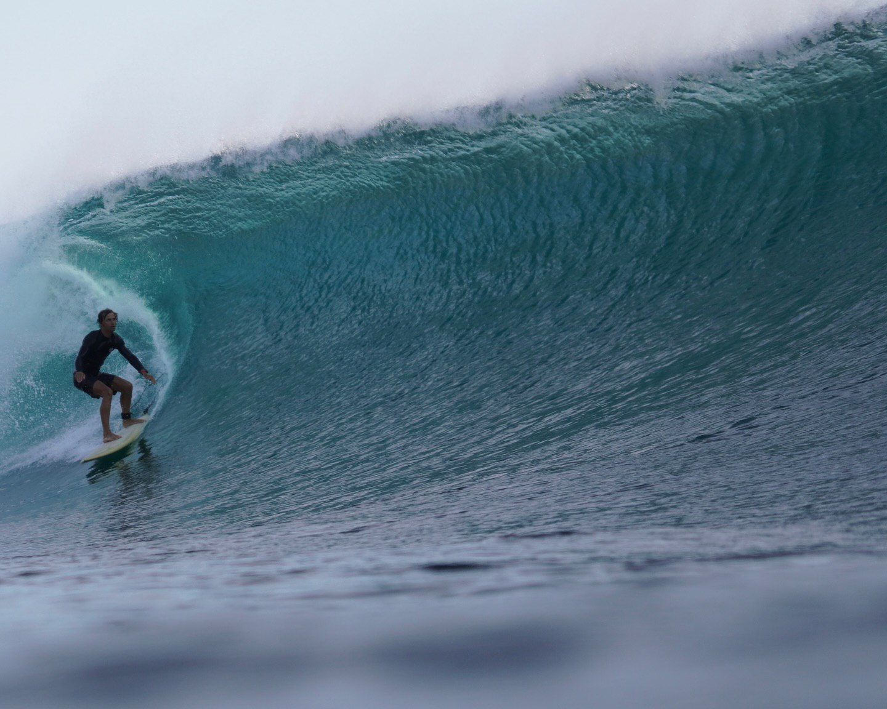

Если вы хотите по-настоящему погрузиться в мир серфинга и перенять опыт профессионала — это предложение для вас.
Илья Чайка — Waterman с 20-летним стажем. Он катается на спотах, доступных только серферам высокого уровня, и уже 15 лет обучает тому, чем занимается профессионально.

Обучаясь по методике Ильи, вы ставите правильную базу сразу. Это позволяет прогрессировать быстрее и получать настоящее удовольствие, не тратя время на исправление закатанных ошибок.
Процесс строится под ваш текущий уровень. Мы подбираем наиболее подходящие условия, чтобы каждая минута в воде работала на результат.
Вам важно учиться у тренера, который дорожит своим именем и занимается с вами лично. Опыт наставника напрямую влияет на качество вашего обучения.
Вы учитесь не просто отрабатывать навыки на привычных спотах, а уверенно переносить их на разные условия под экспертным сопровождением.
Цель — научиться самостоятельно читать прогнозы, выбирать условия и осознанно ездить в серф-путешествия по всему миру.
Вы тренируетесь с тем, кто глубоко понимает стихию и точно знает, в каких условиях вы будете чувствовать себя спокойно и защищенно.